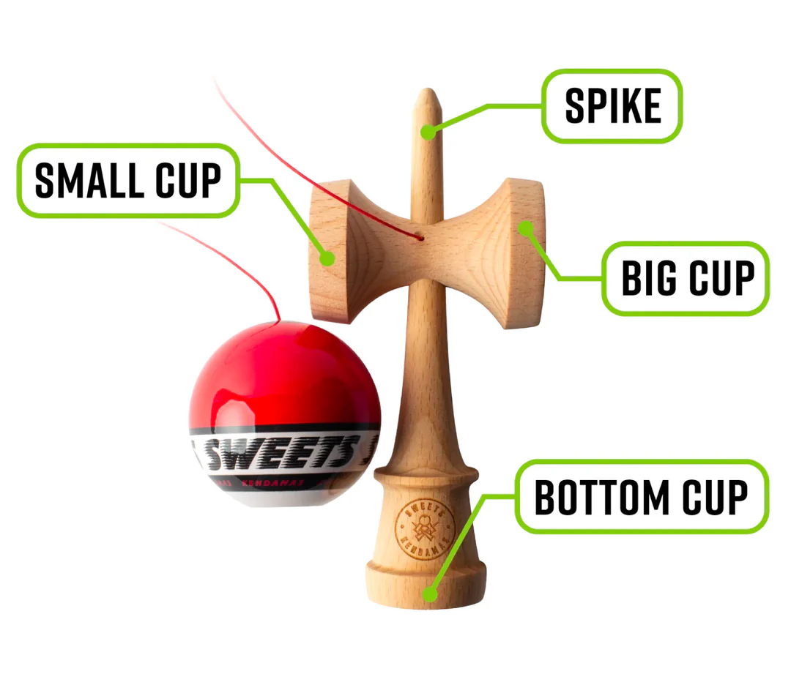
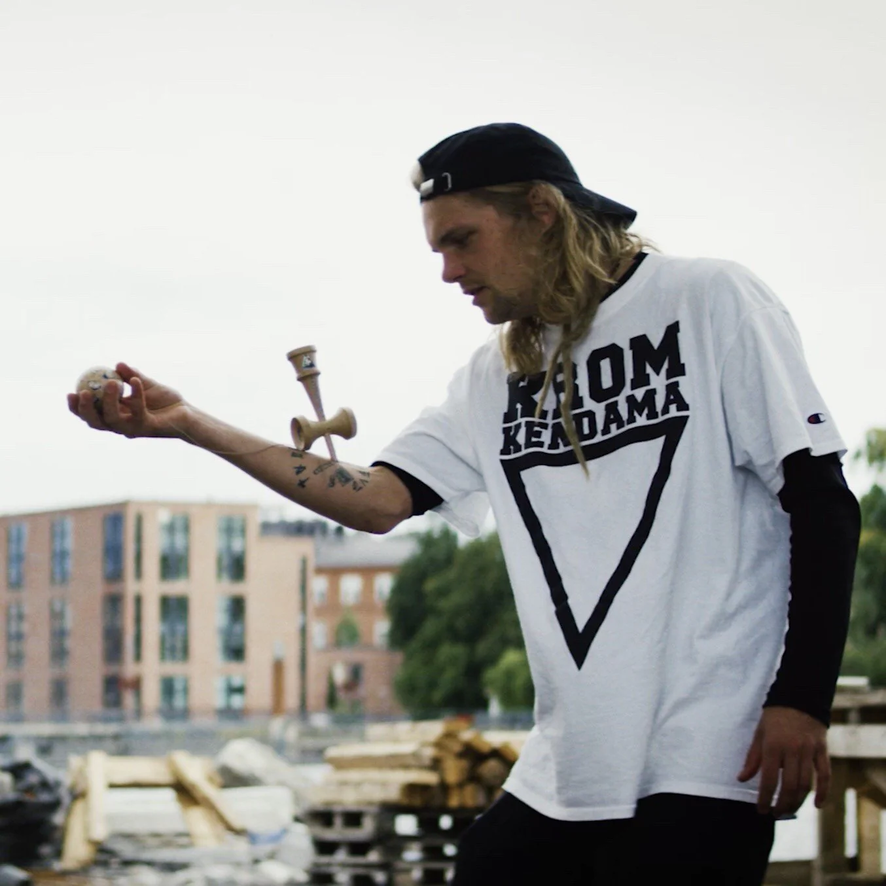

Trucjes
Als je klaar bent om aan je kendama-avontuur te beginnen, is het belangrijk om de basisprincipes te begrijpen. Hieronder vind je een stapsgewijze handleiding die je helpt een sterke basis te ontwikkelen en met vertrouwen te beginnen met spelen.
Aan de slag: de juiste techniek en houding

Begin bij de basis
- Houd de ken op de juiste manier vast - Zorg ervoor dat de punt naar boven wijst en dat de grote cup naar je toe is gericht. Dit is de standaard startpositie voor de meeste trucs.
- Richt het touwgat - Het touwgat op de ken moet naar je niet-dominante hand wijzen. Dit helpt voorkomen dat het touw tijdens het bewegen gaat draaien of in de knoop raakt.
- Grip met intentie - Plaats je duim onder de grote cup en sla je overige vingers om de ken. Je grip moet stevig maar ontspannen zijn, zodat je gecontroleerde bewegingen kunt maken.
- Visuele focus - Houd je ogen altijd op de tama (bal) gericht. Visuele tracking is essentieel voor nauwkeurigheid bij zowel het vangen als het spiken.
- Gebruik je knieën - Gebruik je knieën om de impact op te vangen en de timing te controleren. Dit dempt niet alleen je vangst, maar zorgt ook voor een betere uitlijning voor nauwkeurige trucs.

Er is geen goede of foute manier om kendama te spelen – het belangrijkste is je vooruitgang. Begin met te leren de tama consequent op de cups te vangen. Als je dat eenmaal onder de knie hebt, concentreer je dan op spiking. Door herhaling en controle worden deze basistechnieken een tweede natuur. Van daaruit kun je combinaties, overgangen en freestylevariaties verkennen die je spel naar een hoger niveau tillen.
Bij kendama draait het om vooruitgang, creativiteit en vooral: PLEZIER!
Pro-tip: leer hoe je moet spiken
- Begin met de juiste opstelling – Volg de hierboven beschreven richtlijnen voor positionering en grip.
- Stabiliseer de tama – Laat de tama verticaal hangen met een rechte touwtje. Gebruik indien nodig je niet-dominante hand om hem stabiel te houden en ongewenste bewegingen te minimaliseren.
- Voeg een gecontroleerde draai toe - Draai de tama voorzichtig met je niet-dominante hand. Een lager binnenin zorgt ervoor dat hij even in beweging blijft, waardoor de schuine kant gemakkelijker te volgen is.
- Til met precisie - Til de ken verticaal op totdat de tama ongeveer op kinhoogte komt. Zorg voor een soepele, gecontroleerde beweging.
- Volg de schuine kant - Houd je ogen gericht op de schuine kant (het gat in de tama). Stel je voor dat de spike een natuurlijk verlengstuk is van je duim en leid hem naar zijn plaats.
- Land de spike - Leid de spike met een gestage beweging en focus in de schuine kant. Als je mist, begin dan opnieuw en probeer het nog eens - consistentie komt met oefening.